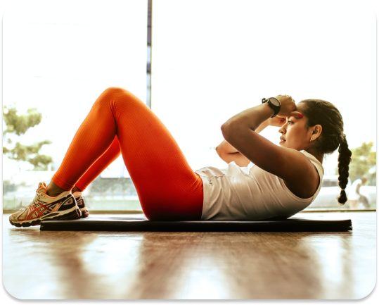

Konsultasi
Edukasi
Eksplorasi
Saling Bantu
Konsultasi
Edukasi
Eksplorasi
Saling Bantu

Workout at Home

Tidak hanya bermanfaat untuk kesehatan fisik, olahraga juga berperan penting dalam kesehatan mental, lho. Olahraga yang dilakukan secara rutin dapat meningkatkan kadar hormone endorphin, yang mana hormone ini dapat memicu perasaan positif. Banyak ragam olahraga yang dapat dilakukan, tetapi di bawah ini dipaparkan olahraga – olahraga yang dapat dilakukan dengan mudah di rumah saja.
1. Bodyweight training
Tidak perlu peralatan olahraga khusus untuk membakar kalori dan memiliki otot yang lebih kuat. Cukup 10 hingga 15 menit mencoba 5 incline push-ups, 5 chair squats, dan 5 walking lunges yang dilakukan secara berulang 2 – 3 kali.
2. Stair Climbing
Sisihkan 10 menit tiap hari dan lakukan kegiatan naik turun tangga. Jika tidak terdapat tangga di rumah, dapat juga dilakukan dengan platform lain yang tidak terlalu tinggi.
3. Aerobic
Bosan dengan olahraga yang begitu – begitu saja? Cobalah aerobic. Dengan alunan music dan gerakan yang mudah untuk diikuti, olahraga akan semakin terasa menyenangkan untuk dilakukan.